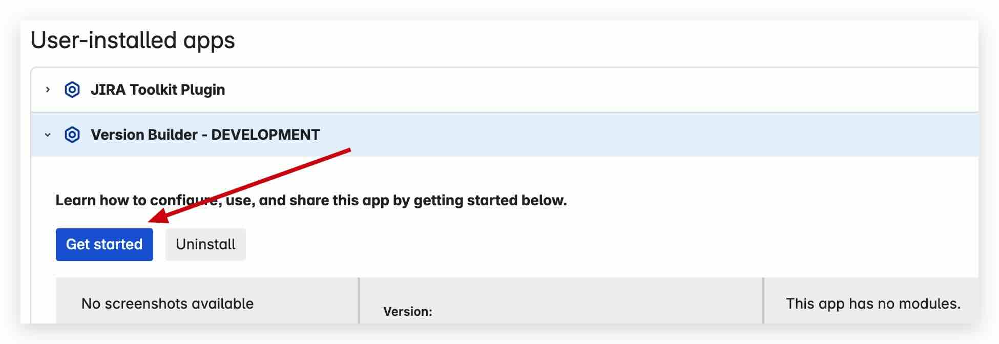
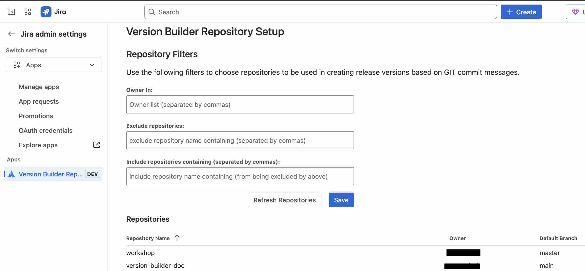
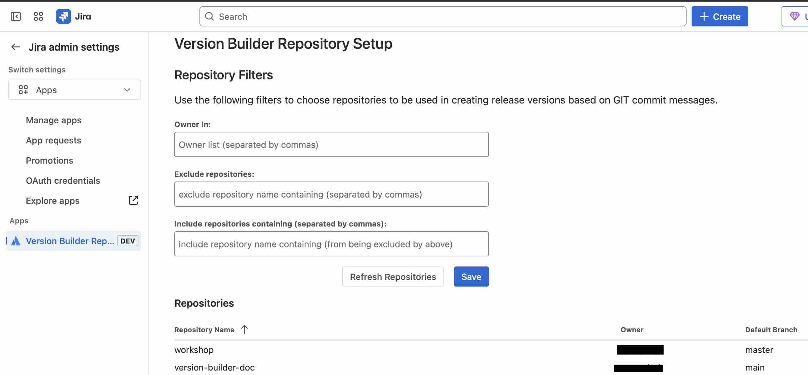
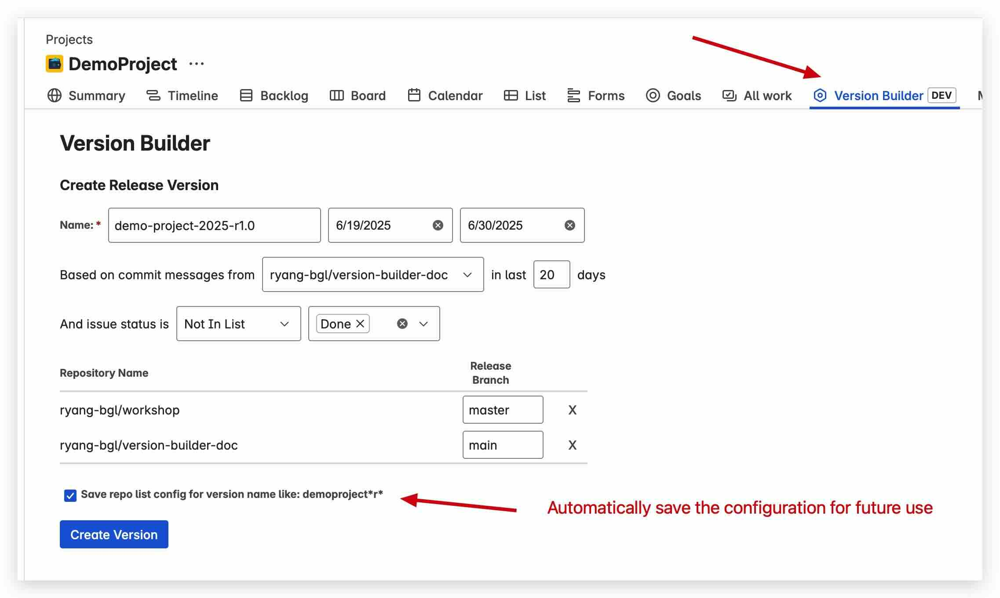
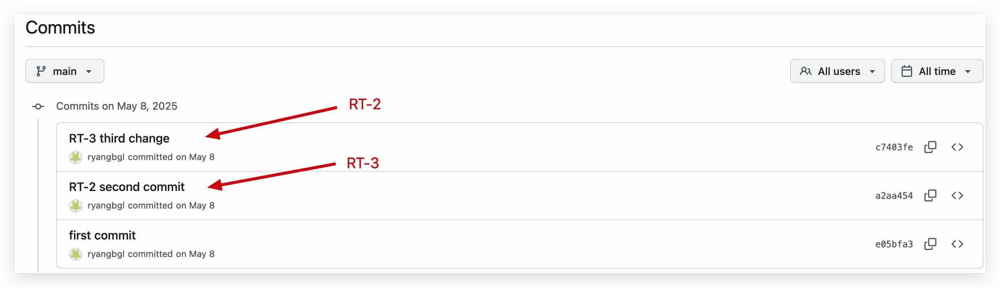
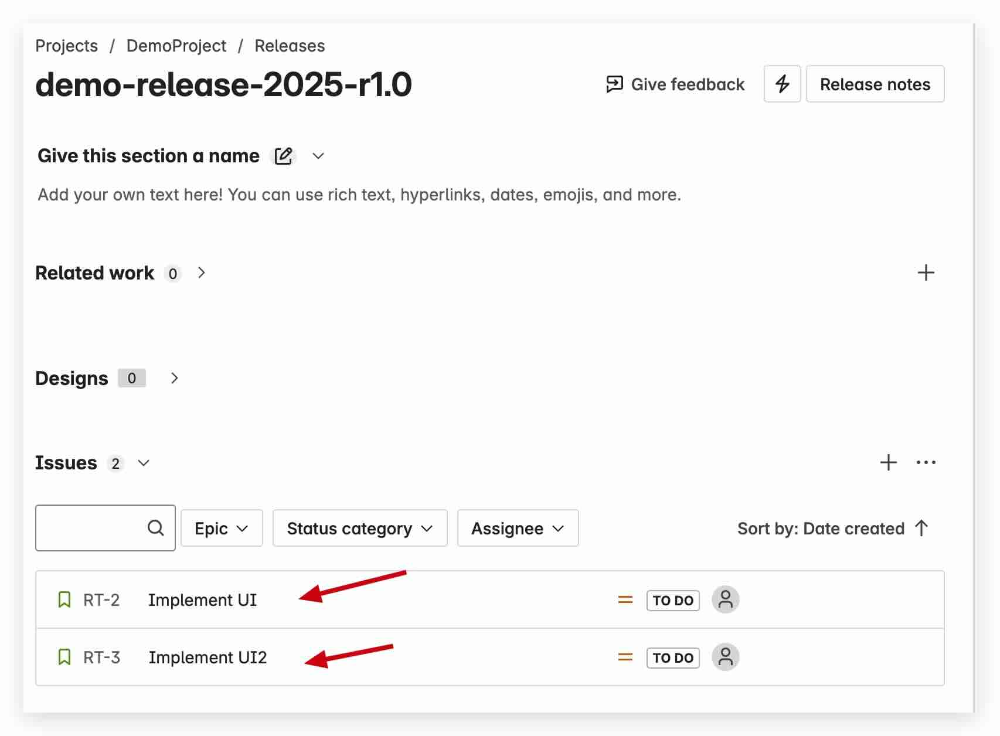

Empower your dev team to ship fast and safe
Streamline your versioning and change tracking process. No more manual changelog creation. No more Git digging.
Get StartedHow It Works
Connect Version Builder
Click the Get Started link to integrate with your GitHub repo and set up your project in less than 5 minutes.

Define Repository Filter Rules
Use our intuitive UI to specify global filters to include only relevant repositories for versioning, and easily exclude library or utility repositories not tied to production releases.
 

Automate Version Creation
- Open any Jira board and select the Version Builder menu to start a new version.
- Choose which repositories to scan for commit messages and issue links.

Review and Track Versions
- View the created or updated Jira version, including all linked issues and commits.
- Easily track release progress and ensure all changes are accounted for.

